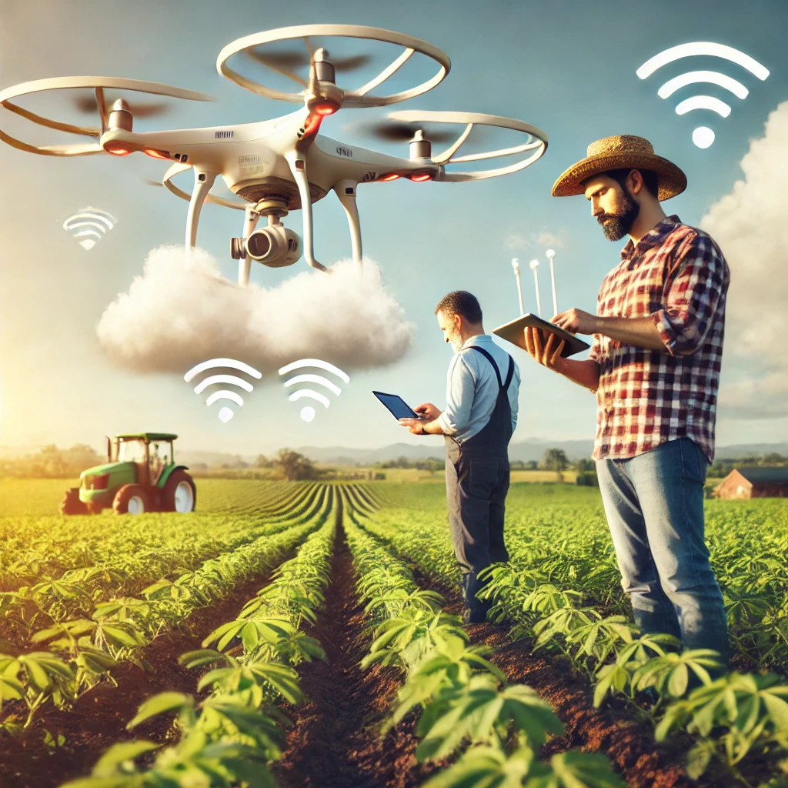
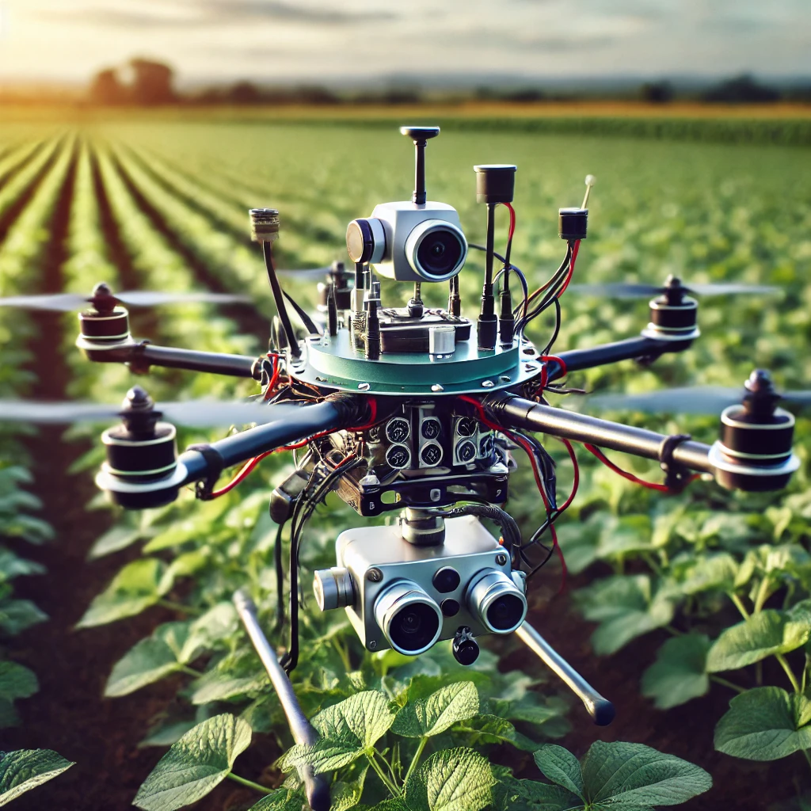
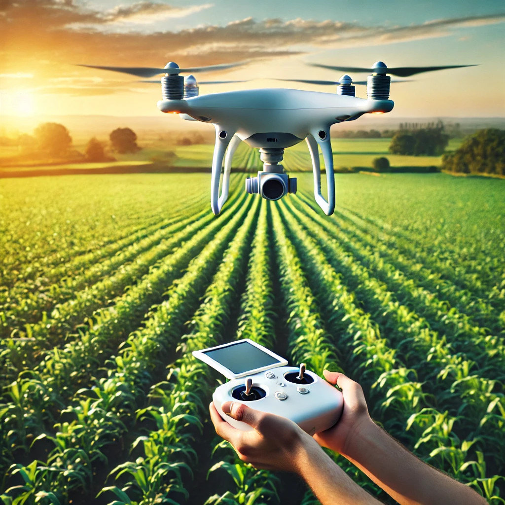

La Rivoluzione dei Droni Agricoli
In Italia, l'uso dei droni agricoli sta rivoluzionando il settore dell'agricoltura. Questi dispositivi high-tech stanno aiutando gli agricoltori a monitorare e gestire i campi con una precisione mai vista prima.
Vantaggi della Tecnologia dei Droni
I droni agricoli sono in grado di raccogliere dati dettagliati sullo stato di salute delle colture, identificare aree problematiche e ottimizzare l'uso di fertilizzanti e pesticidi. Questo non solo aumenta la produttività, ma riduce anche l'impatto ambientale.
Gli agricoltori possono ora prendere decisioni informate basate su dati in tempo reale, migliorando così l'efficienza e la redditività delle loro aziende agricole. La tecnologia dei droni rappresenta una svolta significativa per il futuro dell'agricoltura.
Prospettive Future
Con l'avanzamento continuo della tecnologia, si prevede che i droni agricoli diventeranno ancora più sofisticati e accessibili. Questo porterà a un'ulteriore trasformazione del settore agricolo, rendendo le pratiche agricole più sostenibili ed efficienti.
Gli esperti del settore ritengono che l'integrazione di altre tecnologie emergenti, come l'intelligenza artificiale e l'Internet delle cose, potrà migliorare ulteriormente le capacità dei droni agricoli, aprendo nuove opportunità per gli agricoltori di tutto il mondo.